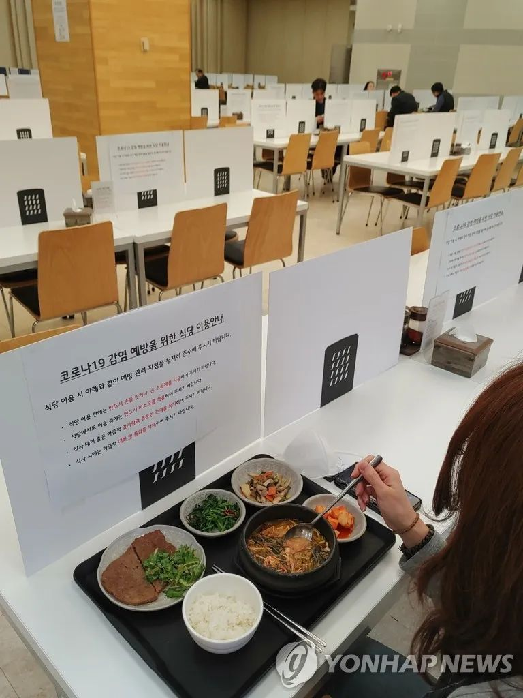
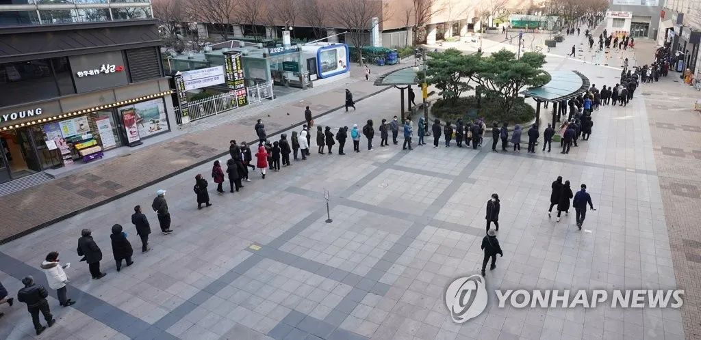
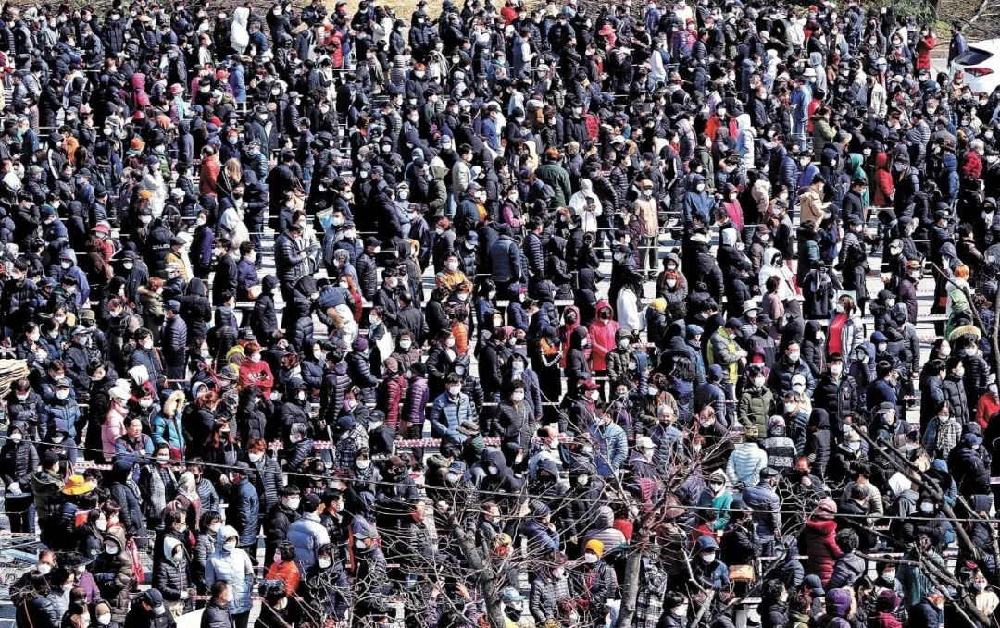

数说疫情0304：海外新增达中国15倍，境外输入75例，美国充满变数
原文链接 备份链接 国内单日新增病例有望很快落到两位数，全国治愈率跨过60%节点。新冠疫情在海外大部分国家和地区（包括美国）还处于暴发的早期阶段。 文 |《财经》数据研究员徐进 图 |《财经》视觉中心 编辑 | 郝洲 一、 国内多地迎来 …

李起元说，这是他人生经历过最严重的事情了。“韩国很小，所以平时新闻也不多。现在发生了这么大的事，电视里新闻都和这个有关了。24小时，全部都是。”
文 | 王仲昀
“是的，一切在2月19日之后都变得不一样了。19日之前，电视里关于疫情的新闻大多和中国有关；19号之后，电视里中国的新闻都消失了，变成韩国的疫情新闻24小时滚动播出。”家住首尔附近的安山市民郑巨焕（音）接受《新民周刊》采访时说道。
近日，《新民周刊》采访到包括郑巨焕在内的三位韩国市民。来自韩国不同城市的他们，介绍了2月下旬以来韩国日益严重的疫情和他们生活的显著的变化。

韩国大邱很多商店已经关闭
据韩联社消息，韩国中央防疫对策本部3月4日通报，截至当天0时，韩国较3日0时新增516例新冠肺炎确诊病例，累计确诊5328例。
自2月19日“新天地”大邱教会引起“超级传播事件”后，韩国成为目前除了中国外疫情最严重国家。

3月3日，首尔汝矣岛LG集团单位食堂，餐桌上立起预防新冠病毒的隔离挡板 图 │ 韩联社
济州岛，如今空无一人
家住济州岛济州市的尹涤说，过去一年，每当中国放假时，济州市到处可见中国游客。街上的银行、免税商店、餐馆，挤满了中国人。但是从今年1月底到现在，游客越来越少。眼见没有生意，很多商店关门，街道上常常出现空无一人的景象。考虑到中国的春节假期原本应该是济州岛一年中最热闹的时节，这更令人唏嘘。
由于地理上与中国近在咫尺，加上对中国游客的免签政策，济州岛在过去多年里一直深受中国游客青睐。但从2月4日开始，韩国政府暂停了济州岛对中国游客的免签。2月19日疫情在韩国暴发后，韩国本国游客也很少有人到济州岛度假。
尹涤是一名朝鲜族中国人，数年前来济州市定居。她告诉《新民周刊》，对于常住人口只有60万、极为依赖旅游业收入的济州岛而言，因为旅游业几乎停滞，本地人受到了很大 的影响。“前几年‘萨德’事件发生后，来济州岛旅游的中国人曾大量减少。后来本地政府推出了一些政策，中国游客又慢慢多了起来。但是现在，有一种一切回到了原地的感觉。”

济州市空荡荡的街道 图 │ 尹涤
企业未停工，上班戴口罩
关门的不只是济州岛大大小小的商店，还有韩国其他地区各种公众场合。家住水原市的李起元（音）告诉《新民周刊》，最近半个月，水原多家超市卖场、KTV等娱乐场所因为疫情而不得不关闭。
“在韩国，大概从2月底开始，政府就规定像超市或者KTV这种公众场所，凡是确诊病例在近期有去过的地方，都会关闭。最近，一旦本地有新的确诊病例出现，我们市民会收到政府发的短信，短信会告诉我们这个病例最近和他身边的人去过哪些地方，哪些地方已经因此被关闭，以及提醒我们不要再去这些场所。”李起元说道。据他回忆，水原当地已有大型乐天超市因此关门。
“政府在新闻里表示，最近两周内能够控制疫情。我们当然希望这样，但还是有点担心的，特别是2月19日之后。SARS，MERS，我们在韩国都遇到了，都比不上这次严重。”李起元说，这是他人生经历过最严重的事情了。“韩国很小，所以平时新闻也不多。现在发生了这么大的事，电视里新闻都和这个有关了。24小时，全部都是。”
李起元的妻子是一名出生在中国延边的朝鲜族人，两人结婚后一直在韩国生活。去年，妻子被所在的韩国公司派往北京工作。妻子带着一大一小两个女儿住在北京，李起元的岳父岳母也在北京帮忙照顾孩子。
今年2月2日，李起元的妻子按照公司通知回到北京工作。由于北京的中小学早已宣布延迟开学，两个女儿便留在了韩国家中。启程前，李起元在韩国通过线上线下各种渠道给即将回中国的妻子买了一些口罩，并留了一部分给家中等待开学的女儿们。“本来我买口罩都是给妻子还有女儿准备的。没想到啊，现在这批留下来的口罩给我用上了。

3月2日，首尔阳川区木洞幸福百货店前，市民们排起长龙购买口罩 图 │ 韩联社
李起元向《新民周刊》表示，原本他在家担心去中国工作的妻子，现在变成她在中国担心自己。“我和我妻子现在每天都会视频。她现在在中国，很想念女儿。2月19日之前，我在电话里总是跟她说，要多注意安全，要保重。19日之后，情况反过来了，变成她每天提醒我，出门一定要戴口罩啊！”
和绝大部分韩国公司一样，李起元所在的汽车配件出口包装公司并没有因疫情而停工停产。他每天依旧正常上下班，唯一不同的是大家都戴上了口罩。
“之前女儿一直和妈妈生活在一起，现在她们已经和我在一起多待了一个多月了。我每天要给她们做早饭和晚饭，午饭她们就得自己解决。”
每人每次限购5只口罩
1月下旬，当新冠肺炎疫情在中国暴发时，韩国民众普遍认为这件事最终会在中国结束，离韩国还很遥远。至于韩国当时出现少数病例，在他们看来也会在2月内就全部控制住。
但是，此前在中国留学5年的韩国人郑巨焕对情况的估计要严重很多。
郑巨焕说，过去一个月来在韩国买口罩变得越来越难。
“一开始，大概是1月底，我在安山的药店和超市都能买到口罩，网上也能买到。慢慢地，网上就没了，药店的口罩变得越来越贵，原来卖500韩元（折合人民币约3元）的口罩，卖到了2500韩元。”郑巨焕向《新民周刊》透露，从3月2日开始，韩国政府已经接管了各地药店的口罩销售。政府会定时组织药店售卖口罩，但数量有限，每人每次最多买5只。“听中国朋友说，他们之前会在小区统一排队买口罩，或者网上预约去药店买，一次最多买5只。现在的韩国跟中国，在这一点上很像。”

3月2日下午，韩国忠清北道清州市上党区龙岩洞，居民扎堆买口罩 图│韩国《中央日报》
据韩联社报道，韩国总统文在寅3月3日表示，随着大邱和附近的庆尚北道新冠病毒危机达到“顶峰”，韩国宣布对新冠病毒“作战”，政府所有机构进入24小时全面戒备状态。尽管政府宣布大邱和庆北两地区疫情达到“顶峰”，但这个“顶峰”会不会持续下去，又要多久才能够缓和，目前没人能给出定论。
相关链接：“新天地”大邱教会“超级传播事件”
自1月20日韩国确诊首位新冠肺炎患者，到2月18日累计确诊31例，每日新增均在个位数以内，其中有13日都无新增患者。相较同时期的日本本土和新加坡，韩国的情况要好一点。但是情况在19日急转直下。19日新增20例，20日新增53例，21日100例。15天后，在3月3日已经超过5000例。
这一切要归咎于2月18日大邱的第31号患者被确诊。这位61岁的女性，2月7日出现症状后，又多次前往教会、医院、酒店等公共场所，直到2月18日才确诊为新冠肺炎。在此期间，此人曾于2月9日和16日与超过1000名信众一同参与礼拜。随后，她所属的“新天地”大邱教会中开始陆续有人被确诊。至今为止，韩国的确诊病例中，近六成与该教会有关。

征集令
《新民周刊》现面向全国征集新冠肺炎采访对象和真实故事：
如果你是参与抗击新冠肺炎疫情的医护人员或其家属，我们希望聆听你的“战疫”故事，也希望传达你的诉求。
如果你是确诊、疑似患者本人或家属，我们希望了解你和家人如何“抗疫”的过程，让外界了解你的真实经历。
如果你是疫情严重地区的普通市民，我们希望展现你的乐观，并倾听你所需的帮助。
如果你是公共服务人员或各类捐助者，我们希望看到你的“最美逆行”，记录下你的无私。
如今，各行各业开始陆续有序复工，如何在疫情中有序恢复经济生产，我们希望了解其中的困难，或是暖心故事。
……
抗击新冠肺炎疫情，我们诚征对疫情了解的社会各界人士，提供相关线索，说出你的故事，让我们用新闻留存这一切。
《新民周刊》新冠肺炎线索征集值班编辑联系方式（添加时请简要自我介绍）：
周一：应 琛 微信号：paulineying0127
周二：金 姬 微信号：gepetta
周三：黄 祺 微信号：shewen-2020
周四：周 洁 微信号：asyouasyou
周五：孔冰欣 微信号：kbx875055141
周六：吴 雪 微信号：shyshine1105
周日：姜浩峰 微信号：jianggeladandong
✳如你需要捐赠物资，可与以下两位工作人员联系:王勇：WangYong-SH 吴轶君：rommy150708（添加时请注明“捐物资”，方便工作人员快速通过您的申请，谢谢。）
新闻是历史的底稿，你们是历史的见证者。期待你的故事、你的线索！

▼
大家还都在看这些
▼
新民周刊所有平台稿件， 未经正式授权
一律不得转载、出版、改编或进行
与新民周刊版权相关的其他行为，违者必究


原文链接 备份链接 国内单日新增病例有望很快落到两位数，全国治愈率跨过60%节点。新冠疫情在海外大部分国家和地区（包括美国）还处于暴发的早期阶段。 文 |《财经》数据研究员徐进 图 |《财经》视觉中心 编辑 | 郝洲 一、 国内多地迎来 …
原文链接 备份链接 根据丁香医生实时数据，截至 3 月 3 日 21:32 时，全国现存确诊病例 29930 例，累计确诊病例 80303 例，现存疑似病例 587 例。其中，重症病例 6806 例，死亡病例 2948 例， …
原文链接 备份链接 新冠肺炎疫情期间，少出门、勤洗手、戴口罩已经深深地刻在国人脑子里。不过，在疫情逐渐扩散的欧洲，戴口罩的反而成为异类，可能被“歧视”。 女议员因戴口罩被赶出议会大厅 根据当地时间3月3日18时意大利卫生部公布的最近数据， …
原文链接 备份链接 CDC表示一天能做的测试只有100个，有些力不从心。 文、图 | 李 莹 今天（3月2日）是我滞留在美第38天#详见《口述实录 | 我大年夜出发去美国自助游，直到现在还被困在旧金山》#，美国已有100例新冠病毒感染肺炎 …
原文链接 备份链接 从趋势上看，新冠肺炎全球大流行可能无法避免，中国需一边打好国内阻击战，一边应对全球疫情带来的新风险。 文 | 信娜 朱贺 编辑 | 王小 空格 鉴于中国境外受新型冠状病毒疫情影响的国家和病例数量持续增加，2月28日，世 …